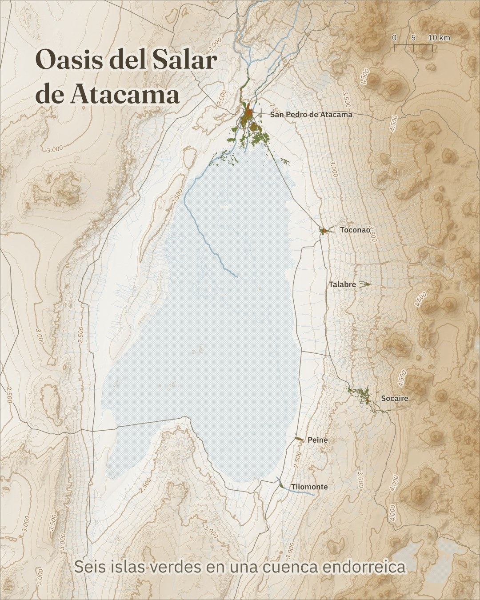

Oasis Atacama
Seis islas verdes en la cuenca del Salar de Atacama.
Territorios de Chile leídos con teledetección y sistemas de información geográfica, en láminas pensadas para entenderse de un vistazo.
Soy María José Garay, geógrafa especialista en geomática, con foco en turismo científico, teledetección y SIG ambiental. Cada serie parte de una pregunta geográfica sencilla y la responde con un mapa: qué hay, dónde está y cómo se ve desde el espacio.
Próximamente: volcanes y lagunas de la cuenca.